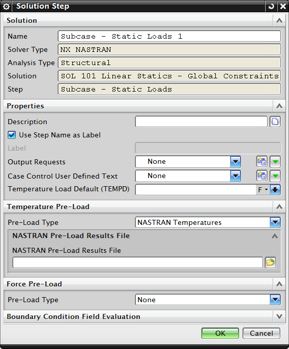

热应力和应变
您可以从线性静态分析中计算热应力和应变。
在节点温度与参考温度不同时将引起热应变，可以直接将温度指派给节点，或指定几何体温度。
在存在热应变的区域可以包含机械载荷载荷，以评估二者的共同影响。

热应力分析
热应力分析可以有选择地使用热结果作为结构分析的预载输入。
要使用 NX Nastran 的预载属性：
-
在仿真导航器中，右击结构解算方案中的子工况并选择编辑。
-
对于预载类型，选择 NASTRAN 温度。
-
浏览并选择 NX Nastran *.op2 文件，其中包含了温度结果。
要使用 NX 热中的结果，将预载类型设置为 NX 热温度。

了解预载
指定预载时，求解器：
-
从选定的输出文件中读取节点温度数据
-
在结构节点上施加温度载荷，网格对于 NX Nastran 必须是相同的，但对 NX 热则不需要
-
计算 Δt 时使用材料数据或解算方案属性中的应变自由温度
-
与任何现有的结构载荷一起使用结构材料属性